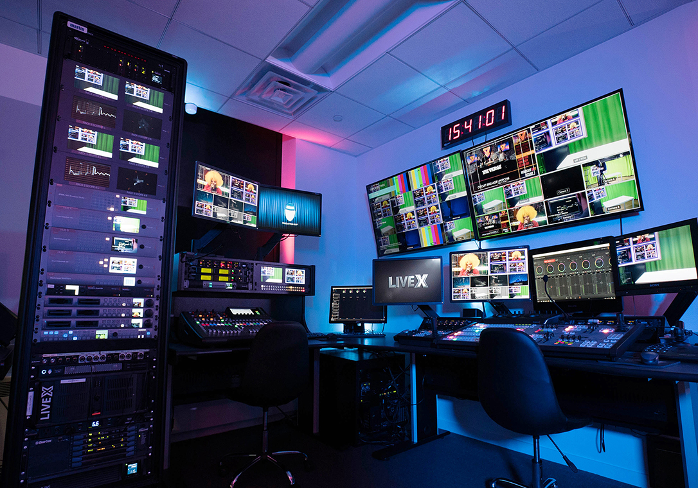

Sobre o Canal Solo Fértil
Bem-vindo ao Canal Solo Fértil! Aqui você encontrará dicas, notícias e informações sobre fertilizantes, cultivos e o universo agrícola. Nossa missão é compartilhar conhecimento e promover práticas sustentáveis para um melhor aproveitamento do solo e dos recursos naturais.
Nosso canal se dedica a trazer as melhores informações para agricultores, profissionais da área e entusiastas do campo. Acompanhe nossas novidades e mantenha-se atualizado com as tendências do setor.